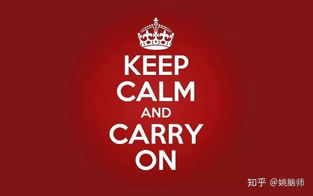

2020年1月26日 大年初二
从想写这篇文章到真正写完，短短两天，冠状病毒确诊的例子已经增长了150%，死亡人数快翻了一番。
有玩过Plague Inc. 的都知道，病毒一旦传播起来，感染人数绝对是呈指数增长的。
抗毒这场战役，一定会是场持久战。
面对冠状病毒的危机，医学上的防控固然重要，心理上的防线亦要守住！
一、恐慌“病毒”的传播
跟2003年面对SARS相比，2020年我们在信息传播的能力上今非昔比。微信微博等社交平台基本被冠状病毒疫情刷屏。武汉还未被冠状病毒征服，焦虑和恐慌已经散播至世界各地。
目前我们对2019-nCoV病毒所知甚少，没有有效的诊断和治疗的手段，在面临这种不确定性的情况下，大脑不可避免地会感到焦虑和抑郁 [1, 2]。
相较起积极的情绪，消极的情绪如焦虑和恐慌更会占用大脑的注意力 [3]，也越容易通过社交平台快速广泛地传播开来 [4, 5]，过度地放大和加剧了整个人口的焦虑和恐慌程度 [6]。
过度的焦虑会降低大脑的执行功能（executive function）[7]，尤其是工作记忆（working memory）和认知弹性（cognitive flexibility）[8]，导致部分人群做出一些缺乏理智、害人害己的行为。
比如武汉封城前出逃的30万市民，很可能把病毒不必要的扩散到了世界各地，拉长了这场战役的周期。又比如那位从武汉飞法国的小姐姐为了隐瞒病情，吃药降体温逃避机场安检 (https://www.bbc.com/news/world-asia-china-51231593)。
过度的焦虑还有可能影响身体的免疫系统 [9]，加剧炎症反应 [10]。越是担心自己得病，越是容易被病毒击倒。
那我们在面对危机时应该如何控制自己的情绪呢？
二、稳定自身的情绪
根据注意力控制理论（attentional control theory）[11]，大脑正常的运作取决于对注意力的控制。焦虑和恐慌之所以让人不理智，是因为它们霸占了大脑的注意力，导致它缺乏足够的资源正常思考。
作为普通个体来说，我们要有意识地控制自己的注意力，做到：
1）学会筛选信息，拒绝贩卖焦虑
目前在社交平台传播着诸如 “XX医院爆满，高烧病人等待10小时不得治” 这样贩卖焦虑的新闻。是的，我们第一线的医疗系统压力很大，我们应该给予应有的关注。但是对大多数普通人来说，我们对医院的压力是无能为力的。**这种新闻带来的焦虑和恐惧是不可控的，除了博得点击量，对疫情的防控并没有实际的价值。**因此我们就不应当过度地关注或是传播这类新闻，阻止焦虑的进一步传播。
相比之下，那些科普如何做好疫情防控的信息能指导我们做出实际的行动，为疫情的防控做出我们力所能及的一分贡献。这样的信息才是值得我们关注和传播的。
2）以不变应万变，维持生活正轨
随着时间的推移，疫情在短期内一定是会加速恶化的，如果把自己的注意力都放在追踪疫情的进展上，我们生活的重心就不可避免地会围绕着病毒转，导致身未病心先病。
生命可贵，谁都希望自己的人生写满了快乐，而不是焦虑和恐慌。不管病毒如何肆虐，我们只要做好了自己力所能及的事情，配合政府，严格自检防控，保持冷静，拒绝恐慌造谣，就能把大脑从疫情的阴影中解放出来，过好年，过好自己的日常。我们若能在心理上先战胜病毒，就是给一线战斗的人民公仆最大的支持！
3）选择乐观，看到希望
蔽日的乌云总镶着一条金边。危机固然可怕，但我们如何看待它，如何在逆境中找到正能量，最终取决于我们自己的选择。
比如说，有了这次危机，我们才记起默默守护着我们生命的是那些平凡的医护人员和科学家们。有了这次危机，我们才重新体会到生命的无常，才会更珍惜自己和家人朋友在一起的时间，才会更努力地实现自己的人生价值。
如果我们能选择乐观，多关注这次危机给我们带来的新医疗技术，应对社会问题的新经验，众志成城的团结精神，对人生观世界观的新思考，我们就能把逆境转变成机会，让我们的社会在度过这次危机后变得更加美好。
值此新春之际，姚脑师祝大家鼠年快乐，身体健康，幸福平安！

参考文献
- Gentes, E. L., and Ruscio, A. M. (2011). A meta-analysis of the relation of intolerance of uncertainty to symptoms of generalized anxiety disorder, major depressive disorder, and obsessive-compulsive disorder. Clin. Psychol. Rev. 31, 923–933.
- McEvoy, P. M., and Mahoney, A. E. J. (2012). To be sure, to be sure: intolerance of uncertainty mediates symptoms of various anxiety disorders and depression. Behav. Ther. 43, 533–545.
- Vaish, A., Grossmann, T., and Woodward, A. (2008). Not all emotions are created equal: the negativity bias in social-emotional development. Psychol. Bull. 134, 383–403.
- Rozin, P., and Royzman, E. B. (2001). Negativity Bias, Negativity Dominance, and Contagion. Personality and Social Psychology Review 5, 296–320.
- Stieglitz, S., and Dang-Xuan, L. (2013). Emotions and information diffusion in social media—sentiment of microblogs and sharing behavior. Journal of Management Information Systems 29, 217–248.
- McNaughton-cassill, M. E. (2001). The news media and psychological distress. Anxiety, Stress & Coping 14, 193–211.
- Shields, G. S., Moons, W. G., Tewell, C. A., and Yonelinas, A. P. (2016). The effect of negative affect on cognition: Anxiety, not anger, impairs executive function. Emotion 16, 792–797.
- Shields, G. S., Sazma, M. A., and Yonelinas, A. P. (2016). The effects of acute stress on core executive functions: A meta-analysis and comparison with cortisol. Neurosci. Biobehav. Rev. 68, 651–668.
- Leonard, B. E., and Song, C. (1996). Stress and the immune system in the etiology of anxiety and depression. Pharmacology Biochemistry and Behavior 54, 299–303.
- Moons, W. G., and Shields, G. S. (2015). Anxiety, not anger, induces inflammatory activity: An avoidance/approach model of immune system activation. Emotion 15, 463–476.
- Eysenck, M. W., Derakshan, N., Santos, R., and Calvo, M. G. (2007). Anxiety and cognitive performance: attentional control theory. Emotion 7, 336–353.